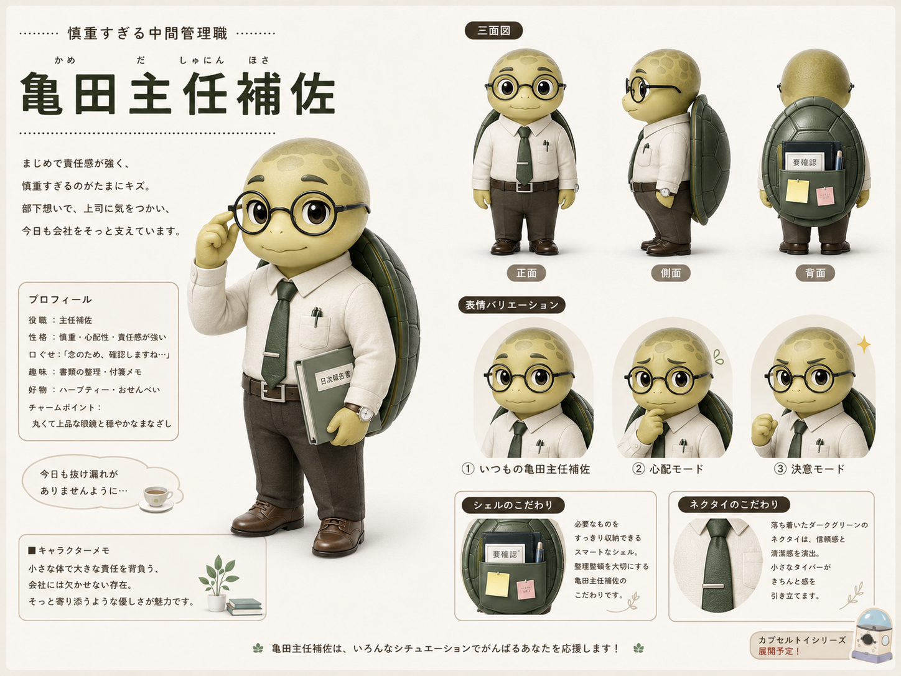

Staff profile / Kameda
亀田
主任補。
まじめで責任感が強く、少しだけ慎重すぎる放心ラボの営業担当。今日も社内外の調整ごとを甲羅いっぱいに背負っています。
COMPANY株式会社 放心ラボ
DEPARTMENT営業本部 法人営業部
POSITION主任補

Current work
現在の仕事内容

法人営業と、だいたい全部。
法人のお客様を中心に、放心ラボが開発した商品の提案営業を担当しています。新規顧客への提案から既存顧客へのフォロー、見積書の作成、社内各部署との調整まで、業務内容は多岐にわたります。
「とりあえず亀田さんに聞いてみよう」と言われることが増え、本人の甲羅には今日も少しずつ仕事が積み重なっています。
Daily schedule
ある一日のスケジュール
Standard weekday / allegedly
08:30
出社・メール確認
まずは未読メールの確認から。昨日の退社後に増えたものを順番に処理します。
09:00
営業ミーティング
案件の進捗確認と情報共有。なるべく話を振られない位置に座ります。
10:00
顧客訪問
新商品の提案のため取引先へ。資料は前日に3回確認済みです。
12:00
昼休憩
近くの定食屋へ。午後の予定を考えながら食べるため、あまり休めてはいません。
13:30
商談・既存顧客フォロー
納期や仕様について打ち合わせ。できないとは言わず、一旦持ち帰ります。
15:30
帰社・見積作成
商談内容を整理し、見積書や提案資料を作成します。
17:00
社内調整
営業、開発、製造など各部署へ確認。ここから予定外の仕事が増え始めます。
18:30
退社（仮）
勤怠だけ退勤扱いにします。上長が帰り始めてからが本番です。
19:00
資料作成
アサインされたプロジェクトの資料作成を行います。通常業務とは別枠です。
20:00
雑務処理
とても日中にはこなせない業務を消化していきます。いつになったら引き継げるのでしょうか。
21:00
雰囲気残業
もう頑張る気力はありませんが、タスクが終わらないので、なんとなく会社にいます。
22:00
帰宅
翌日への憂鬱を抱えながら帰宅します。
MESSAGE FROM KAMEDA
← HOMEへ戻る「明日は早く帰ります。」